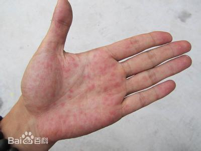

手脚出汗量正常，是正常的生理反应。

但如果手脚出汗过多，那是一种原因不明的功能性局部异常多汗。手脚多汗又称“手脚多汗症”或者“手足多汗症”。 汗腺的分泌是经由交感神经所控制的，而手汗症即是因不明原因的交感神经过度紧张，例如紧张、兴奋、压力或夏天高温造成手掌排汗异常增加所致，还可由于交感神经损伤或异常的反应，乙酸胆碱分泌增多，导致小汗腺分泌过多的汗液。
而中医认为，手脚多汗是因脾胃功能失调引起的。